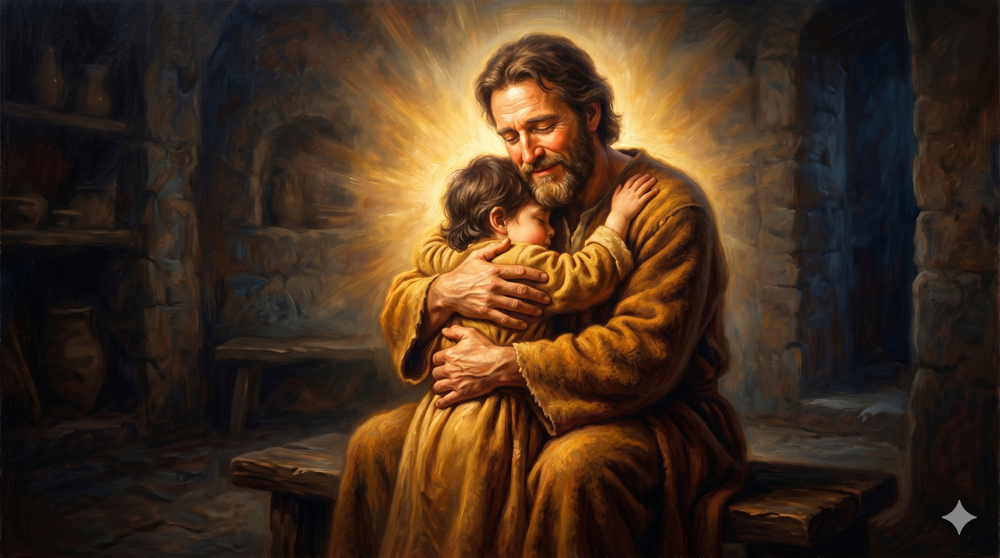

노년의 요한이 따뜻한 등불 아래 편지를 쓰는 장면 — "어떠한 사랑인가!"라는 탄성이 흘러나오는 듯한 그의 얼굴, 하나님의 자녀라는 신분의 경이로움
"보라 아버지께서 어떠한 사랑을 우리에게 베푸사 하나님의 자녀라 일컬음을 받게 하셨는가 우리가 그러하도다 그러므로 세상이 우리를 알지 못함은 그를 알지 못함이라 사랑하는 자들아 우리가 지금은 하나님의 자녀라 장래에 어떻게 될지는 아직 나타나지 아니하였으나 그가 나타나시면 우리가 그와 같을 줄을 아는 것은 그의 참모습 그대로 볼 것이기 때문이니" — 요한일서 3:1–2
"보라 아버지께서 어떠한 사랑을 우리에게 베푸사!" 요한은 이 말씀을 쓸 때, 마치 숨이 막히는 경이로움으로 펜을 들었을 것입니다. 그리스어 원문을 보면 "어떠한"(포타펜)이라는 단어는 단순한 정도의 표현이 아닙니다. 이 단어는 본래 "어느 나라에서 온"이라는 뜻으로, 전혀 다른 세계에서 온 낯선 것을 묘사할 때 씁니다. 요한이 말하는 것은 이것입니다. 하나님의 사랑은 이 세상의 언어로는 도저히 설명할 수 없는, 전혀 다른 차원의 사랑이라는 것입니다. 그 사랑의 결과가 바로 "하나님의 자녀"라는 신분입니다.
요한은 지금 이 순간의 신분("지금은 하나님의 자녀라")과 미래의 영광("그가 나타나시면 우리가 그와 같을 줄을 아는 것") 사이에 우리를 세웁니다. 지금 세상은 우리를 알아보지 못합니다. 왕의 자녀가 미천한 나그네처럼 보일 수 있듯이, 하나님의 자녀인 우리도 세상의 눈에는 별 볼 일 없어 보일 수 있습니다. 그러나 요한은 말합니다. 지금 이미 우리는 하나님의 자녀입니다. 그리고 그분이 다시 오실 때, 우리는 그분의 참모습을 보게 되고, 그와 같이 될 것입니다. 이 소망을 가진 자는 오늘을 다르게 삽니다(3절). 스스로를 깨끗하게 하며, 그분을 닮아가려 합니다.

아버지의 품에 안긴 자녀의 모습 — 하나님의 자녀라는 신분의 따뜻함과 안전함, 세상이 알아보지 못해도 아버지가 알아보시는 존재의 존귀함
당신은 오늘 자신이 누구인지 알고 계십니까? 세상은 우리에게 수많은 이름표를 붙입니다. 실패자, 늙은이, 부족한 사람, 쓸모없는 사람. 그러나 요한은 외칩니다. "보라! 우리는 하나님의 자녀라!" 이것은 우리가 노력해서 얻은 신분이 아닙니다. 아버지의 사랑이 베풀어 주신 신분입니다. 우리가 무엇을 이뤘는지가 아니라, 하나님이 우리에게 무슨 사랑을 주셨는지가 우리의 정체성을 결정합니다. 오늘 세상의 눈치 때문에 작아지지 마십시오. 당신은 왕의 자녀입니다.
3절의 말씀도 붙잡으십시오. "주를 향하여 이 소망을 가진 자마다 그의 깨끗하심과 같이 자기를 깨끗하게 하느니라." 미래의 소망은 현재의 삶을 바꿉니다. 내가 언젠가 그분의 참모습을 보고 그분과 같이 될 것이라는 소망은, 오늘 나를 그분을 닮아가는 방향으로 이끕니다. 소망이 없으면 오늘을 아무렇게나 삽니다. 그러나 이 소망이 있으면, 오늘 하루도 하나님의 자녀답게 살아야 할 이유가 생깁니다. 요한의 노년은 이 소망으로 빛나고 있었습니다.
세상이 알아주지 않아도 괜찮습니다.
하나님이 이미 당신을 자녀라 부르셨습니다.
그 사랑이 어디서 온 것인지 "보라!"고 요한은 외칩니다.
오늘 당신의 신분을 기억하십시오 — 하나님의 자녀입니다.